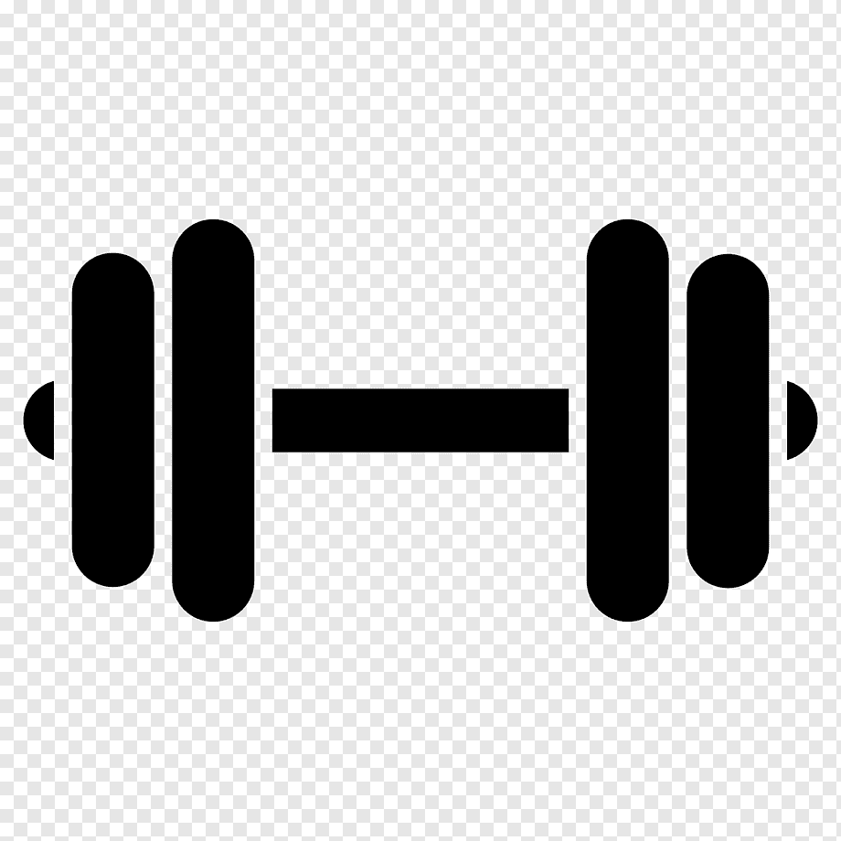

| HOBBIES |
| |||
| Sobre mí | Estudios | Index | Jugar Futbol: Ya sea con amigos o familiares, en mis momentos libres siempre me gusta mucho salir a jugar este deporte. | |
|
| Redes sociales: Normalmente en mi tiempo libre me gusta revisar con frecuencia distintas redes sociales. | |||
|
| Escuchar música: Ya sea mientras realizo actividades como tareas,obligaciones del hogar o para simplemente relajarme, me gusta escuchar diferentes géneros de música. | |||
| ¿Cómo fue realizado este portafolio? | Aparte de los hobbies ya mencionados anteriormente, que son los que realizo con una mayor frecuencia,también me gusta realizar otro tipo de activades en mi tiempo libre realizo otras actividades como jugar videojuegos, ver tv, y hacer ejercicio. | |||

|  | |||